|
|||||||||||||
| ｜27日｜ ｜29日｜ | |||||||||||||
|
|
|
|
|||||||||||||
| ｜27日｜ ｜29日｜ | |||||||||||||
|
|
| NINTENDO 64 ソフトコーナー（ライセンシー）その２ |
| 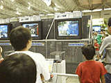●WIN BACK (コーエー) 動きのスムーズさ、ディテールの細かさなど、かなりのこだわりを見せるガンアクション対戦ゲームです。小学生に人気で、友達どうしが楽しそうに遊んでました。 ｢モーションの細かさには自信があります。やっぱり、3〜4人で対戦したいただくのが一番面白いと思いますよ。繰り返し遊んでくれるグループもいましたから｣ |
| 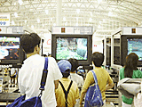●大刀 (コトブキシステム)
ジョン･ロメロのアクションアドベンチャーシリーズが、64に登場。まだ半分くらいしか完成してないそうですが、けっこうみんな遊んでいました。 ｢小さな子は操作が分からないことが多いので、もうずっとつきっきりですよ(笑)｣ とお疲れのスタッフさん。大変ですね。 |
| 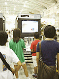●トップギア･ハイパーバイク (コトブキシステム) 実在のバイクが登場するレースゲーム。オンロードとオフロード、両方のレースが楽しめるというのは面白そうです。 ｢こういうイベントですから、並んでいるのは小学生が中心ですね。皆さん楽しんでくれてましたけど、時々、今どこを走っているのか分からなくなる子がいました。直さなくちゃいけないかな･･･｣ と、ちょっと反省されてます。ユーザーの反応を直接見たり聞いたりできるイベントならではですね。 |
| 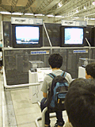●VIEW POINT2064 (サミー) 知る人ぞ知る｢VIEW POINT｣。昔、アーケードで人気を博したシューティングゲームです。それが今回、いきなりリアルな3Dになって64で復活したのですから、まあビックリ。 ｢もちろん、前作を知らないでプレーしている方も大勢いますけど、懐かしがってプレーされている人も多かったです。見た目はぜんぜん違いますけど(笑)｣ |
| 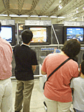●V-RALLY EDITION99 (スパイク) '99年の最新データでWRCを完全再現したレースゲーム。かなりキレイな画面で、大人の人が真剣にプレーしていました。 ｢UK(イギリス)ではすっごい売れたゲームなんです。ヨーロッパはカーレースの人気がすごいですから。日本でも同じくらい売れてほしいですね｣ |
| 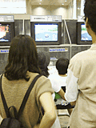●チョロQ64 2(仮) (タカラ) おなじみ｢チョロQ64｣の第2弾です。とにかくチビッコに大人気！ 家族連れがひっきりなしに並ぶので、スタッフの人が説明に大ワラワ。というわけで、すみませんがコメントは取れませんでした。プレーの終わった男の子はひと言｢欲しい！｣。だそうです、お父さん。 |
| 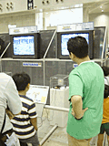●ビーストウォーズ メタルス64 (タカラ) 10月から再開されるアニメに合わせて同時発売されるそうです。こちらも子供に大人気で、戦いながらテレビと同じようにしゃべるビースト戦士たちに一喜一憂していました。 ｢前作(アニメ)の人気がすごかったですからね、子供たちの反応も上々です｣ |
| 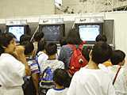●爆ボンバーマン2 (ハドソン) 新要素満載の｢爆ボン｣第2弾。パズル的な楽しみのあるストーリーモードと、対戦が楽しいバトルモード、1台ずつ用意されてたんですが、どちらも小学生でいっぱいでした。何度も並び直している子も多いみたい。 ｢午前中は(プレー時間)10分制限だったんですけど、長蛇の列ができちゃって･･･。さばききれないので、仕方なく午後からは5分制限に変更しました｣ 嬉しい悲鳴を上げるスタッフさんでした。 |
| 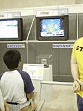●64ウォーズ (ハドソン) 現代戦を扱ったウォーゲーム。最近少なくなったジャンルとはいえ、まだまだファンは多いようです。 ｢手軽に遊べるといってもウォーゲームですから。最初のうちは遊び方が分からずにどまどっているお子さんも多かったです。年齢が高めの人や、昔からこういったゲームで遊んでいる人はすんなりシステムを理解されますから、並びの少ないときは長い時間遊んでもらってます。まあ、長時間プレイが基本のゲームですから、イベント向きじゃないですよね(笑)｣ まあ、買って遊んでいただきましょう！ |
| 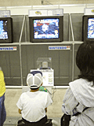●ロボットポンコッツ64 七つの海のカラメル (ハドソン) ゲームボーイで人気の｢ロボポン｣が64で登場。64GBパックを使えば、今までに育てた"ロボポン"を64に送り込むこともできるそうです。迫力の3Dバトルにはファンの男の子たちも納得顔。 ｢やっぱり小学生、低学年の子供たちが中心に遊んでました。今日は育成モードより、すぐに勝負のつく対戦プレイのほうが人気だったようです｣ |
| 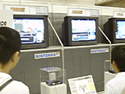●スーパーロボット大戦64 (バンプレスト) 待ちに待った｢スパロボ｣シリーズが、とうとう64にやってきました。5分間ではサワリしかプレーできないにも関わらず、大勢のファンが並んでましたし、観戦者も多かったようです。 ｢プレーをされていた方の多くはシリーズをプレーした経験があるようですが、今回のストーリーは完全64オリジナルですし、新システム、新キャラクターも追加されてますので、ぜひ製品版でも遊んでいただきたいですね｣ |